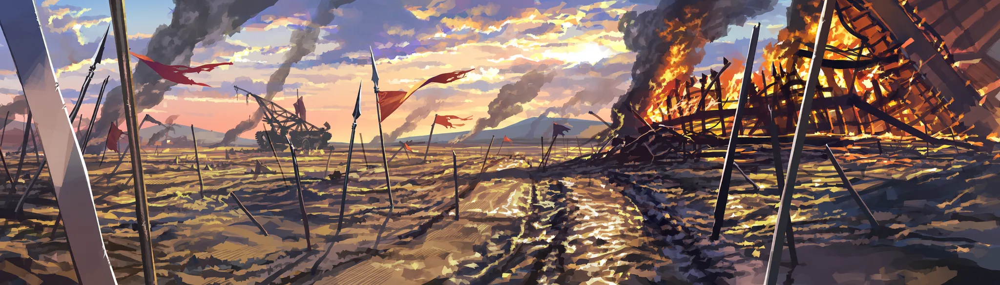
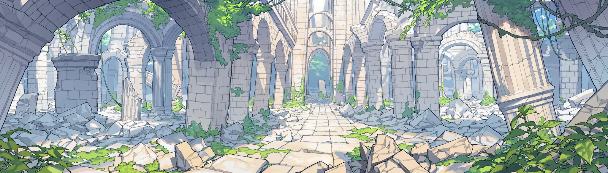

FULL DIVE · VRMMO · 벨라트 서버
죽어도돌아온다.
당신은 이방인. 죽으면 레벨이 깎이고, 귀환석에서 다시 눈을 뜬다. 원주민은? 한 번이면 끝.
전체월드히든정세
- [월드] 라흐나 제3환, 아직 돌파한 이방인이 없습니다.
- [히든] 잔영귀 · 전설. 서버 로그에는 직업명만 공개됩니다.
- [랭킹] 1위 줄리엣 · Lv64 월광검사
- [히든] 잿말잡이 · 일반. 히든직이라고 다 좋은 건 아닙니다.
- [정세] 북부 국경, 카르시온과 하르덴이 전면전에 가장 가까워졌습니다.
- [월드] 신화 등급 보유자, 서비스 이래 0명.
- [정세] 칼데스가 이방인 축출을 내걸고 움직이고 있습니다.
- [월드] 3차 전직자, 서버 전체 5명.

SYSTEM
사망했습니다
레벨 하락강제 로그아웃까지 3
포드 밖으로 튕겨 나옵니다. 다음 접속은 귀환석에서.
PLAYER이방인
죽으면 레벨이 깎이고, 돌아온다. 몇 번이든.
NATIVE원주민
이 화면이 없다. 한 번이면 끝.
“죽어도 돌아오는 자에게 검을 가르치는 건, 삽을 쥐여주는 것과 다르지 않다.”

REAL · 2047 대한민국
--:--:--몸은 여기, 포드 안에.
월정액, 포드 할부, 정비비. 로그아웃하면 저린 다리랑 커뮤 여론이 기다린다.

BELAT · 여명기 이후 800년
--:--:--나는 저기, 대륙 위에.
꺼 둔 사이에도 대륙은 굴러간다. 현실 여섯 시간이 여기선 하루.



WORLD EVENT · 사변
일어난 일이
곧 이야기.
메인 스토리도 결말도 없다. 대륙 어딘가는 늘 끓고, 터지면 사변. 무너진 마을은 폐허로 남고, 죽은 원주민은 돌아오지 않는다.
사변 진행되돌릴 수 없음
공지는 없다. NPC 말투가 바뀌고, 물자가 사라지고, 시세가 튄다. 눈치 빠른 사람이 먼저 움직이지.
대륙 공지, 징집령, 통행 봉쇄. 퀘스트가 한꺼번에 쏟아진다.
전선과 거점 싸움. 거점 하나는 뒤집어도, 전쟁 전체를 혼자 바꾸진 못한다.
승리, 패배, 교착. 당신 편이 이긴다는 보장은 없음.
국경, 영지, 시세, 원주민의 목숨. 바뀐 건 안 돌아온다.


NEW GAME
어디서
눈을 뜰래?